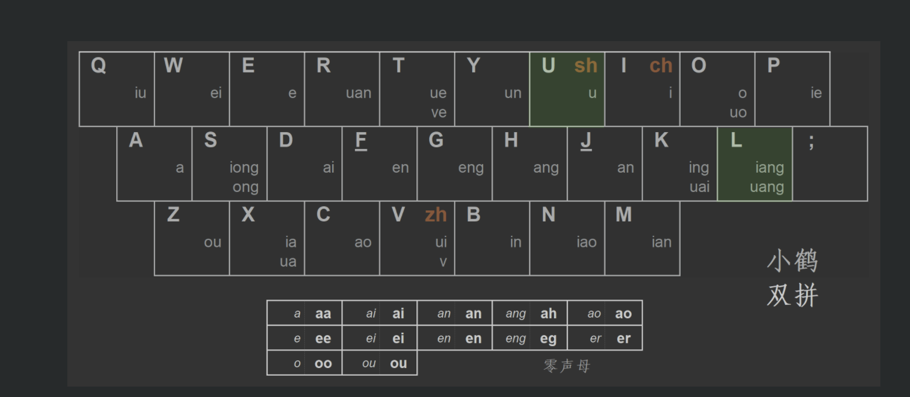

Ongoing Journey - December 2021
Long time no see lol, this semester has being quite busy though, as mentioned before, wish to use this site more as a public journal to help process my thoughts. Thoughts can’t really be processed if I draw nothing down so, planning on trying something different.
Currently thinking about a monthly update on life and things I found intersting, will see how it goes :D.
Life Updates
Baking
 Banana bread :D
Banana bread :D
Inspried by my roommate, started baking at around second half of the semester. Quoting directly from him, baking is a quite an ‘rewarding experience with direct benefits’, it’s nice to have something for you to enjoy right after a long learning process.
At this point have tried chocolate chip cookies and banana cupcakes, wish to learn how to make an actual cakes one day, and perhaps more if I have the time.
TP Showcase
 First in-person showcase in about a year and half
First in-person showcase in about a year and half
Joined an in person 15-112 TP showcase! Got reminded on how much I miss interacting people face to face, was able to see, hear, and interact with everyone all at the same time, their emotions, laughers, feels nice to be back in school :).
Hikes
picture taken from one of the hiking trialsRarely considered myself an outdoor person, though did start to enjoy hikes more and more, less about the walk itself, more on things I do while on walking I would say?
I get to listen to audiobooks and podcasts, sometimes listening to musics and even sing along lol, feels almost like I am the only person in this world.
It’s a good break from whatever I am doing, spent some time with myself and enjoy the sunny weather out in So Cal :).
双拼
Learned a bit about 小鹤双拼, a chinese input system that focus on 声母 and 韵母.
Have this tendency to overthink, make things appear harder than they look, and then just not start on them all together.
So this time blocked out sometime and forced myself to practice it, and it’s being about a week at this point, would say both the input system and time blocking has been quite useful.
LoR

Picked up Legend of Runterra and got 7 wins in its expidition mode.
One nice thing about being on break is that, I finally get to play games every now and then, and with how poor I am with games (Iron II in League of Legend and Angry Chicken in Hearthstone), was pretty proud of myself on getting to this point :].
Felt like a big part of my enjoyment on games this break was that, I tried to find joy in games even when I might not be the best gamer. Games like Project Zomboid, Astronarch, or just lower the diffculty of the game in general.
Reads
- Parting Thoughts (uy6Z^vnS) from professor Raja
- Flower of Algernon
- The 7 Habits of Highly Effective People
Watched
- The Newsroom, season 1-3
- House M.D., season 1
- Happiness
- 培泰红法则 by 整天摸鱼的三日坊主